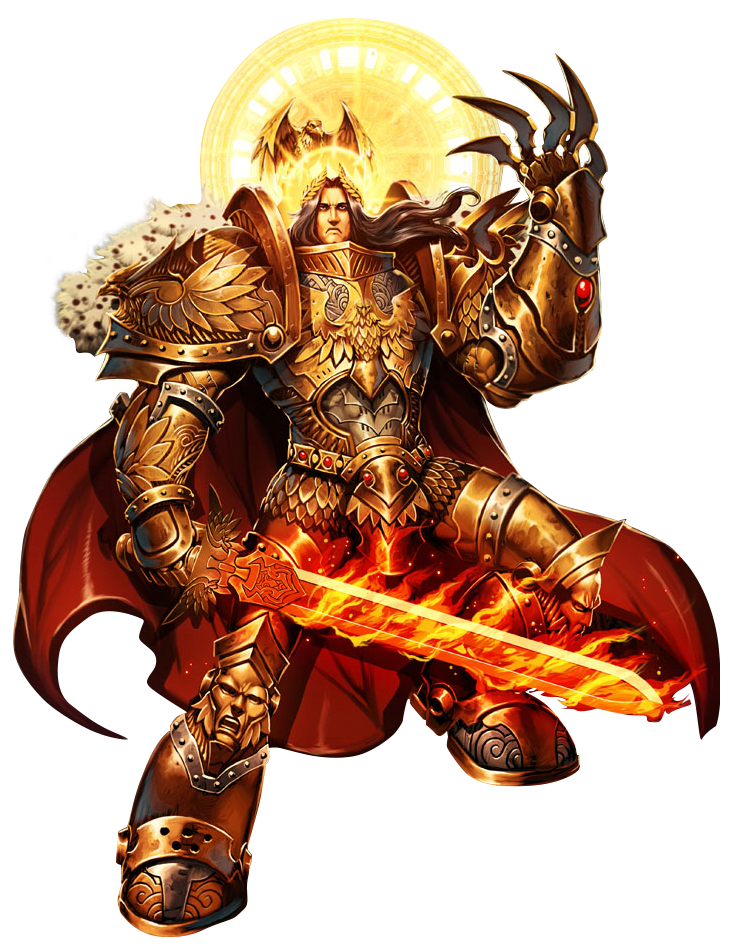

Imperium of Man

The Imperium of Man is a galaxy-spanning interstellar human empire, the ultimate authority for the majority of the human race in the Milky Way Galaxy in the late 41st Millennium A.D. It is ruled by the living god who is known as the Emperor of Mankind.
However, there are other humanoid species classified as Imperial citizens, mainly mutant offshoots of genetic base-line humans who are known as Abhumans and include such human sub-races as the Ogryns, Ratlings and Squats.
The founder and ruler of the Imperium is the god-like Emperor of Mankind, the most powerful human psyker ever born. The Emperor founded the Imperium over 10,000 Terran years ago in the late 30th Millennium during the Unification Wars on Old Earth following the terrible period in human history known as the Age of Strife.

The Emperor continues, at least nominally, to rule the Imperium as both its political master and its primary religious figure. However, His badly damaged body is interred within the cybernetic life support mechanisms of the arcane device known as the Golden Throne following His mortal wounding during the ancient interstellar civil war of the Horus Heresy.
Because of this terrible fate, the Emperor is incapable of interacting with others on a day-to-day basis and has left the basic governance of His Imperium to the Senatorum Imperialis, an oligarchic ruling council of the most powerful noble lords and Adepts in the galaxy. The Senatorum Imperialis is currently led by the Emperor's genetic son, the Primarch Roboute Guilliman, who chairs the council and directs Imperial policy as the Lord Commander of the Imperium.
The Imperium of Man is a war-torn stellar empire, teetering on the brink of collapse. For 10,000 Terran years it has been ruled by the deathless Emperor, a being of almost limitless psychic power, to whom thousands of souls are sacrificed daily.